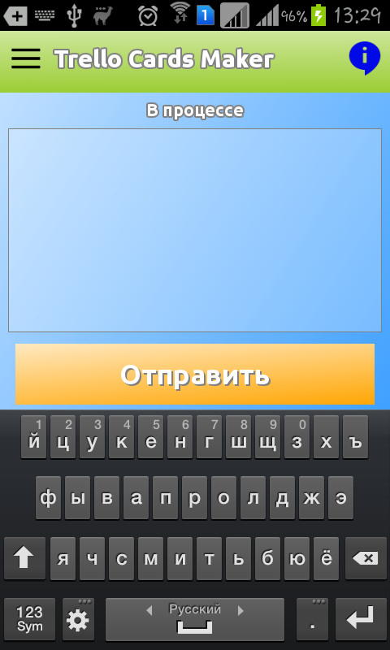
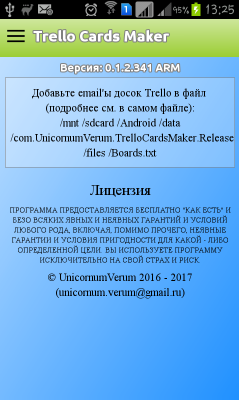

|
TrelloCardsMaker
Version: 0.1.4 Revision: 404 Platform: x64 Build: 13:54 19.07.2019
Android offline client cards maker for Trello
|
|
TrelloCardsMaker
Version: 0.1.4 Revision: 404 Platform: x64 Build: 13:54 19.07.2019
Android offline client cards maker for Trello
|
Решение предназначено для построения Android клиента для создания карточек на доске Trello, способного работать при отсутствии доступа в Интернет.
Программа представляет собой нативное Android приложение, позволяющее создавать карточки для доски Trello при отсутствии соединения с Интернетом (используется предоставлямая Trello возможность отправки письма на специальный почтовый ящик, связанный с конкретной доской в Trello).
Приложение понадобилось из-за того, что официальное приложение:
 
© UnicornumVerum 2016 - 2019 (unicornum.verum@gmail.ru)
 1.8.15
1.8.15